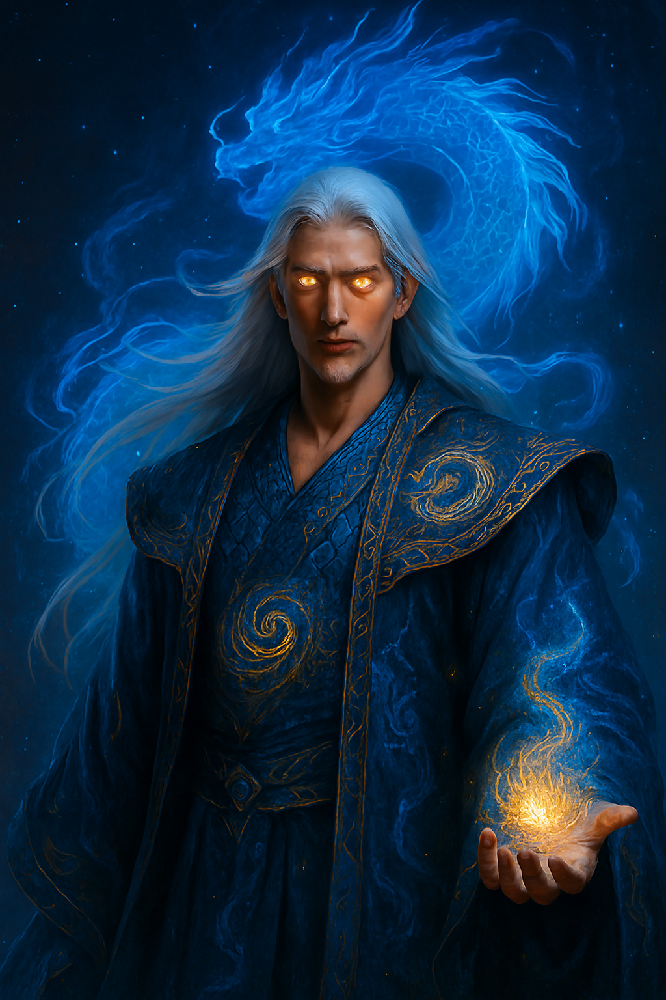

Lin Er

Relationships Of Xiao Lin
The relationship between Xiao Lin and Lin Er is the emotional core of Echoes of Azure Cloud. Their bond evolves from quiet companionship into a legendary connection capable of influencing the balance of heaven itself.
🌙 Their First Connection
Xiao Lin first meets Lin Er during his early days in the Azure Cloud Sect. At the time:
Xiao Lin is isolated, mocked for his weak spiritual roots.
Lin Er appears gentle, calm, and mysterious.
Unlike others, she never looks down on him.
She notices something hidden within him — a loneliness and determination that mirrors her own.
Their earliest interactions are subtle:
sharing cultivation resources,
quiet conversations beneath moonlit trees,
supporting each other after harsh training trials.
Lin Er becomes the first person who truly believes Xiao Lin can rise beyond destiny.
🐉☽ The Balance of Azure and Moonlight
Their relationship becomes deeper because their powers naturally resonate.
Xiao Lin
carries the Azure Dragon Soul,
embodies fierce willpower, destruction, and heavenly authority.
Lin Er
possesses the Moonlight Spirit Vein,
represents calmness, healing, spiritual purity, and emotional balance.
Together, they form a rare harmony:
Azure symbolizes overwhelming force.
Moonlight symbolizes emotional clarity.
Lin Er stabilizes Xiao Lin whenever the dragon power threatens to consume his humanity.
🌌 Emotional Development
As the story progresses, their bond evolves through several stages:
1. Trust
Lin Er supports Xiao Lin when nearly everyone doubts him.
2. Dependence
Xiao Lin gradually relies on her presence to maintain emotional control during cultivation breakthroughs.
3. Sacrifice
Both repeatedly risk their lives for one another during sect wars and heavenly trials.
4. Spiritual Resonance
Their souls eventually synchronize during cultivation, creating the legendary:
Azure Moon Resonance
This allows them to:
combine qi,
strengthen each other’s cultivation,
share emotions and spiritual awareness.
⚔️ Their Greatest Struggle
As Xiao Lin grows stronger, the Azure Dragon Soul begins eroding his emotions and humanity.
He becomes colder:
more ruthless in battle,
more distant from others,
increasingly consumed by destiny.
Lin Er refuses to abandon him.
Even when Xiao Lin fears he will eventually lose himself completely, Lin Er remains his emotional anchor. She constantly reminds him:
why he fights,
what it means to remain human,
and that strength without emotion becomes emptiness.
💔 Tragic Beauty of Their Love
Their relationship is not simply romantic — it is tragic and transcendent.
They both understand:
Xiao Lin’s destiny may require sacrifice,
heavenly balance may never allow them a peaceful life,
and their love exists against the will of fate itself.
Despite this, neither abandons the other.
Their bond becomes legendary throughout the cultivation world:
“Where Azure Clouds descend, Moonlight follows.”
🌠 Final Relationship Theme
By the climax of the story:
Lin Er represents Xiao Lin’s final connection to humanity.
Xiao Lin becomes Lin Er’s reason to challenge heaven itself.
Even after Xiao Lin’s final sacrifice, the echoes of his soul continue responding to Lin Er’s moonlight aura, implying their connection transcends death and reincarnation.
Their relationship ultimately symbolizes:
balance between power and emotion,
love against destiny,
and the idea that even divine beings need someone who understands their soul.

The rivalry between Xiao Lin and Mo Tian is one of the fiercest conflicts in Echoes of Azure Cloud — a clash between two destined geniuses walking opposite paths.
🐉 Xiao Lin
fights to protect others and preserve his humanity,
carries the Azure Dragon Soul,
believes true strength comes from perseverance and emotional bonds.
🌑 Mo Tian
a terrifying heavenly prodigy consumed by ambition,
seeks absolute dominance over the Celestial Realms,
believes emotions and attachments are weaknesses.
Their rivalry begins during the sect competitions, where Mo Tian initially sees Xiao Lin as insignificant. But as Xiao Lin rises through impossible battles and awakens his dragon power, Mo Tian becomes obsessed with surpassing and crushing him.
Over time, their battles evolve from simple competition into a symbolic war:
Azure vs Void
Humanity vs Power
Hope vs Domination
Mo Tian constantly provokes Xiao Lin, attempting to push him into losing control of the Azure Dragon Soul. Meanwhile, Xiao Lin views Mo Tian as the embodiment of what he could become if he abandons compassion for power.
Their conflict eventually shakes the heavens themselves, turning them into legendary rivals feared across the cultivation world.

The bond between Xiao Lin and his father is built on quiet love, sacrifice, and unspoken faith.
Before Xiao Lin entered the cultivation world, his father was one of the few people who never mocked his weak talent. Though unable to give him great power or status, he taught Xiao Lin resilience, humility, and kindness.
Even when the entire village doubted Xiao Lin’s future, his father continued believing:
“A true dragon does not reveal itself at birth.”
As Xiao Lin grows stronger and steps into dangerous heavenly conflicts, he realizes his father secretly carried the burden of protecting their family’s hidden dragon legacy. Much of his father’s harshness and silence came from fear that Xiao Lin would one day be hunted by powerful enemies.
Their relationship becomes one of Xiao Lin’s deepest emotional anchors:
his father represents the simple humanity Xiao Lin tries not to lose,
while Xiao Lin becomes the hope his father once sacrificed everything to protect.
Even after entering the higher realms, Xiao Lin carries his father’s teachings in his heart, remembering that true strength is not only power — but the ability to protect those you love.

🐉 Bond Summary — Xiao Lin & His Ancestor Xiao Tian
The bond between Xiao Lin and his ancestor Xiao Tian is one of legacy, destiny, and inherited will.
Xiao Tian was one of the legendary Four Dragon Generals who fought beside the Dragon Sovereign during the ancient war against Tianmo. Though long dead, fragments of his spirit remained sealed within the Azure Dragon bloodline.
As Xiao Lin awakens his dragon powers, he begins experiencing visions and trials left behind by Xiao Tian. At first, Xiao Tian appears cold and demanding, testing whether Xiao Lin is worthy of carrying the clan’s legacy.
Over time, their connection deepens:
Xiao Tian becomes both a mentor and spiritual guardian,
while Xiao Lin becomes the descendant capable of fulfilling the mission his ancestor could not complete.
Xiao Tian teaches Xiao Lin ancient dragon techniques, battle instincts, and the burden of true leadership. More importantly, he warns him about the danger of losing himself to overwhelming power.
Their bond symbolizes the passing of the dragon legacy across generations:
the will of the past entrusted to the future.

🍃 Bond Summary — Xiao Lin & Elder Yun
The bond between Xiao Lin and Elder Yun is a classic master-and-disciple relationship built on guidance, trust, and quiet sacrifice.
Elder Yun is the first cultivator to recognize the hidden potential within Xiao Lin when everyone else sees only weakness. Sensing the faint resonance of the Azure Dragon Soul, he brings Xiao Lin to the Azure Cloud Sect and becomes his earliest mentor.
Though strict and often mysterious, Elder Yun trains Xiao Lin not only in cultivation, but also in discipline, patience, and control. He understands that Xiao Lin’s power could either save the heavens or destroy him from within.
To Xiao Lin:
*Elder Yun becomes a father-like figure in the cultivation world,
*the person who opened the path to his destiny,
*and one of the few elders he fully trusts.
To Elder Yun:
*Xiao Lin is both his greatest disciple and greatest concern,
*a young man carrying a burden too heavy for mortals,
*yet also the hope of restoring balance to the heavens.
Their relationship grows stronger through battles, sacrifices, and heavenly trials, with Elder Yun repeatedly risking himself to protect Xiao Lin from forces hunting the Azure Dragon legacy.
Their bond represents:
guidance without control, and faith without conditions.